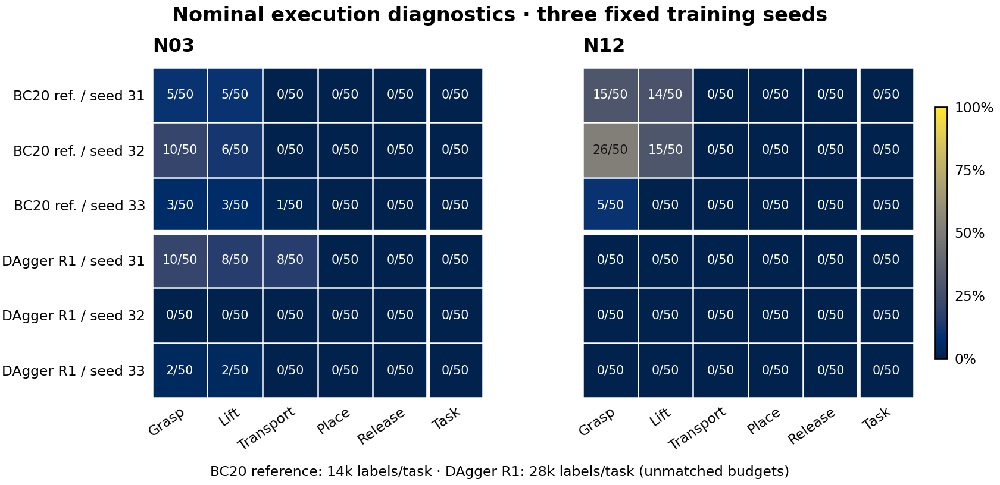

Ablations pending ·M1 eval queued ·R2 released, not started
LABORATORY SKILLS / ON-POLICY DISTILLATION
ChemOPD-4
From scripted experts to recoverable student skills.
Phase 2 / 第二阶段 · Four Panda tasks in Isaac Lab / MATTERIX. The study tests whether expert labels on student-visited states, verifier filtering and failure/recovery weighting improve learned skills under a matched label budget.
N12 strict local safety: NOT_ALL_PASSED
328k diagnostics +120k initial +840k formal ·native matrix incomplete
M4 standard primary task results are complete; the matched matrix remains open
N03 three-seed task successes are1/50,1/50,0/50; N12 all0/50. Both successful trajectories retain actual-acceleration exceptions. BC20reference and M3round1 each retain six0/50 banks. Auxiliary motion-qualified counts are a post-result description, not a replacement primary metric or safety guarantee. M1’s nine fixed fits are complete; student native evaluation is queued. Ablations are only partly closed; all seeds, failures and original denominators remain reported.
N12 qualification safety: NOT_ALL_PASSED
The earlier qualification takeover set recorded two exceptions. Case09 recorded one actual-acceleration exceedance above the local 15.0001 rad/s² threshold; case49 recorded one command-acceleration exceedance above 2.51 rad/s². High-rate peak magnitudes and exact ticks are unavailable. The 41,811 geometry-feasibility candidates are not strict-safety passes or training admissions. All qualification data remain outside training. Separate new training-role collections and BC20 fits are reported below.
Snapshot 2026-10-21T17:21:04Z · curated static report
02 / EVIDENCE · 已验证与未测
Keep the evidence boundaries visible.
FROZEN v1
Functional reproduction baseline: 34 / 36
The published v1 baseline remains frozen. A03 is RUNNING and A06 is BLOCKED. Phase 2 uses a separate plan and acceptance ledger.
Open the published v1 scoreboard →
Frozen commit 43b923316e0aa6f8c65dd3d651607a60041f98b3
Guidance8 · pipeline gates and first DAgger update
PIPELINE /ROUND1 DATA COMPLETEThe shared final execution pipeline is checked with expert actions and exact open-loop replay. The expert gate reconstructs the state through the observation/normalizer boundary without calling the neural network. Students receive raw41; local-anchor41 encoding and normalization occur once inside the model, followed by bounded physical8 → one shared G8 postprocessor → C3. Clean labels and neural-network/BCE architecture are unchanged. The postprocessor uses translation EMAα0.5, shortest-arc delta-quaternion SLERPα0.5 and binary grip hysteresis (close>0.6; open<0.4; equality retains state), reset per environment from actual fingers. This is an execution mechanism, not a claim to repair acceleration causes.
| Task | A: expert through final pipeline | B: raw-action replay | Trajectory agreement | Validation calls / training rows |
|---|---|---|---|---|
| N03 | 20/20 ·four limit counters0 | 20/20 ·query0 | Full trajectory exact | 14000 /0 |
| N12 | 20/20 ·four limit counters0 | 20/20 ·query0 | Full trajectory exact | 14000 /0 |
Both original parent audit failures after complete native data are retained: the protocol lacked interval-counter field metadata. A repaired independent CPU audit passed; no native rerun or replacement. Expert/replay gate success does not establish learned-policy performance.
M3 · first pure-student DAgger round
THREE FIXED FITS COMPLETEEach seed collects20 new student-executed episodes/task, beta0, with clean current-state expert labels, no semantic filter and no recovery weighting. Hard numerical, provenance and interval-motion gates remain. New acquisition totals84000queries over120episodes on40unique(task,source) instances repeated across3seeds. Pre-update task success is0/120; this is acquisition behavior, not the updated M3 result. All failures, rejected labels and costs remain recorded; unloaded calls/refunds/replacements0.
| Seed | New queries N03 /N12 | New admitted N03 /N12 | Aggregate admitted buffer | Updates /CPU wall | Strict checkpoint load |
|---|---|---|---|---|---|
| 20261031 | 14000 /14000 | 13944 /13957 | 55901 | 40000 ·175.144s | N03 +N12 PASS |
| 20261032 | 14000 /14000 | 13831 /13906 | 55737 | 40000 ·187.823s | N03 +N12 PASS |
| 20261033 | 14000 /14000 | 13958 /13973 | 55931 | 40000 ·209.932s | N03 +N12 PASS |
Actual-motion exceptions remain:1679actual-acceleration exceedance counts, measured as joint×120Hz physics steps; not1679independent events, episodes or20Hz intervals. The other three limit categories are0. Selected buffers55901/55737/55931 retain valid failure prefixes while unsafe intervals are rejected. Each cumulative label budget charges all queried labels, including rejects; admitted rows do not redefine the budget. Fitting restarts from the same per-seed initialization with the common40k Adam3e-4/batch256 recipe. All seeds are reported; no heldout/native checkpoint selection.
Nominal50 heldout · BC20 reference and M3 round1 closed
ALL12BANKS ·0/50 EACHUnmatched label budgets:BC20 common-initial reference uses14000labels/task; M3round1 uses28000. The final M1 baseline is BC80/56000. All BC40/BC60/BC80 fits are now complete, with their student native evaluation still queued. These12rows are descriptive execution diagnostics, not the primary matched-method result. Every row preserves its full50 denominator, all three seeds and its own Wilson interval.
| Model /seed /task | Labels/task | Task /Wilson95% | Stage-ever counts | Command v/a; actual v/a |
|---|---|---|---|---|
| BC20 ref. ·20261031 ·N03 | 14000 | 0/50 0–7.13476% | 5/5/0/0/0 | 0/0; 0/525 |
| BC20 ref. ·20261031 ·N12 | 14000 | 0/50 0–7.13476% | 15/14/0/0/0 | 0/0; 0/617 |
| BC20 ref. ·20261032 ·N03 | 14000 | 0/50 0–7.13476% | 10/6/0/0/0 | 0/0; 1/1998 |
| BC20 ref. ·20261032 ·N12 | 14000 | 0/50 0–7.13476% | 26/15/0/0/0 | 0/0; 2/1579 |
| BC20 ref. ·20261033 ·N03 | 14000 | 0/50 0–7.13476% | 3/3/1/0/0 | 0/0; 10/1866 |
| BC20 ref. ·20261033 ·N12 | 14000 | 0/50 0–7.13476% | 5/0/0/0/0 | 0/0; 0/782 |
| M3 round1 ·20261031 ·N03 | 28000 | 0/50 0–7.13476% | 10/8/8/0/0 | 0/0; 0/60 |
| M3 round1 ·20261031 ·N12 | 28000 | 0/50 0–7.13476% | 0/0/0/0/0 | 0/0; 0/0 |
| M3 round1 ·20261032 ·N03 | 28000 | 0/50 0–7.13476% | 0/0/0/0/0 | 0/0; 0/0 |
| M3 round1 ·20261032 ·N12 | 28000 | 0/50 0–7.13476% | 0/0/0/0/0 | 0/0; 0/0 |
| M3 round1 ·20261033 ·N03 | 28000 | 0/50 0–7.13476% | 2/2/0/0/0 | 0/0; 0/20 |
| M3 round1 ·20261033 ·N12 | 28000 | 0/50 0–7.13476% | 0/0/0/0/0 | 0/0; 0/0 |
Each model has300episodes but only100unique(task,source) instances repeated across3training seeds; both models use the same fixed50sources/task. No pooled300- or600-independent-scene confidence interval is computed. All banks passed finite raw data, case-ID, native-clock, continuity, six-substep interval and zero-query audits; parent/native PIDs are closed and NAS sync is complete. Each case records4200callbacks/35native seconds. Teacher queries, sentinel calls and test-time parameter updates are0. All failures remain. Stage predicates are ever-verified outcomes, not simultaneous instantaneous flags; partial stages and lower event counts do not establish task/safety acceptance or causal improvement.

M4 round1 · primary task results by seed
STANDARD6/6 BANKS CLOSED · ABLATIONS PARTIALAll M4/ablation rows use28000labels/task/learner and fixed40000 fresh-fit updates. The original primary metric is task success on all50 planned cases. Three seeds reuse the same100(task,source) instances; Wilson intervals stay separate by seed/task. No pooled independent-scene CI, seed selection or aggregate improvement claim.
| Variant /seed /task | Primary task SR /Wilson95% | Stage-ever counts | Command v/a; actual v/a | Aux. motion-qualified† | Snapshot state |
|---|---|---|---|---|---|
| M4 standard ·20261031 ·N03 | 1/50 0.3539–10.4954% | 6/6/6/1/1 | 0/0; 0/150 | 0/50 | Closed / audited |
| M4 standard ·20261031 ·N12 | 0/50 0.0000–7.1348% | 0/0/0/0/0 | 0/0; 0/0 | 0/50 | Closed / audited |
| M4 standard ·20261032 ·N03 | 1/50 0.3539–10.4954% | 5/5/5/2/1 | 0/0; 0/683 | 0/50 | Closed / audited |
| M4 standard ·20261032 ·N12 | 0/50 0.0000–7.1348% | 0/0/0/0/0 | 0/0; 0/0 | 0/50 | Closed / audited |
| M4 standard ·20261033 ·N03 | 0/50 0.0000–7.1348% | 4/4/2/0/0 | 0/0; 0/210 | 0/50 | Closed / audited |
| M4 standard ·20261033 ·N12 | 0/50 0.0000–7.1348% | 0/0/0/0/0 | 0/0; 0/0 | 0/50 | Closed / audited |
| No semantic filter ·20261031 ·N03 | 0/50 0.0000–7.1348% | 2/2/2/0/0 | 0/0; 0/38 | 0/50 | Closed / audited |
| No semantic filter ·20261031 ·N12 | 0/50 0.0000–7.1348% | 0/0/0/0/0 | 0/0; 0/0 | 0/50 | Closed / audited |
| No semantic filter ·20261032 ·N03 | 0/50 0.0000–7.1348% | 0/0/0/0/0 | 0/0; 0/0 | 0/50 | Closed / audited |
| No semantic filter ·20261032 ·N12 | 0/50 0.0000–7.1348% | 0/0/0/0/0 | 0/0; 0/0 | 0/50 | Closed / audited |
| No semantic filter ·20261033 ·N03 | 0/50 0.0000–7.1348% | 2/2/0/0/0 | 0/0; 0/27 | 0/50 | Closed / audited |
| No semantic filter ·20261033 ·N12 | 0/50 0.0000–7.1348% | 0/0/0/0/0 | 0/0; 0/0 | 0/50 | Closed / audited |
| No recovery5 ·20261031 ·N03 | 0/50 0.0000–7.1348% | 4/4/4/0/0 | 0/0; 0/1 | 0/50 | Closed / audited |
| No recovery5 ·20261031 ·N12 | 0/50 0.0000–7.1348% | 0/0/0/0/0 | 0/0; 0/0 | 0/50 | Closed / audited |
| No recovery5 ·20261032 ·N03 | Pending planned50 | — | — | Pending | Not yet fully closed |
| No recovery5 ·20261032 ·N12 | Pending planned50 | — | — | Pending | Not yet fully closed |
| No recovery5 ·20261033 ·N03 | Pending planned50 | — | — | Pending | Not yet fully closed |
| No recovery5 ·20261033 ·N12 | Pending planned50 | — | — | Pending | Not yet fully closed |
† Added after observing results. This auxiliary descriptive count requires task_success and all four recorded local motion counters0, on the same50 denominator. It leaves the original primary task SR and Wilson intervals unchanged and is not a universal safety guarantee. Standard N03’s two successful cases retain9/8actual-acceleration joint/physics-step exceedances; all six standard rows have auxiliary count0/50. Stage predicates are episode-ever verified, not simultaneous instantaneous flags; physical exceedance counts are not independent incidents or20Hz intervals.
M1 · expert bank and BC40 /BC60 /BC80 fits complete
NINE FITS /18 CPU TASK CHECKS PASSM1 extra60expert demos/task are complete:120/120 training episodes succeeded,84000actual calls yielded83994admitted rows and6rejected intervals. Nineactual-acceleration joint/physics-step counts remain; other three categories0. All calls, including rejected labels, remain charged. BC40/60/80 each completed three fixed40000 fresh fits at28k/42k/56k access/task; all18strict CPU task loads and all model/data/review NAS packages passed. These are expert collection and CPU fitting results; M1 native evaluation remains queued, with no measured student SR.
| Budget point | Labels/task/seed | Admitted buffer/seed | Fixed updates | CPU /archive | Native task result |
|---|---|---|---|---|---|
| BC40 | 28000 | 55997 | 3 ×40000 | 6/6 PASS ·NAS complete | Queued /unmeasured |
| BC60 | 42000 | 83996 | 3 ×40000 | 6/6 PASS ·NAS complete | Queued /unmeasured |
| BC80 | 56000 | 111994 | 3 ×40000 | 6/6 PASS ·NAS complete | Queued /unmeasured |
Only explicitly reviewed new C3 pure-expert nominal training sources may retain safe six-substep intervals; unsafe intervals stay rejected, explicit holds take priority and all calls remain charged. Legacy nominal/takeover whole-case holds are unchanged. This changes eligibility, not algorithms or thresholds. The earlier source_z export-field bug was repaired before native collection; the withdrawn capsule made0real calls. Expert task success and sample admission are distinct from student success.
Next released work has no result yet
R2 has root release for12separate method/variant/seed learners,24task banks and336000new-call cap, reaching42000labels/task/learner. Native collection has not started: actual new calls0. Previous fixed-final models, beta0 and the same G8 postprocessor are bound; raw banks cannot be shared after divergence. Independent review and a separate root release must precede each fresh fixed40000 aggregate fit.
M0 nominal50/task is queued with a separate70000-call validation cap and0actual calls; oracle labels cannot enter training. DART design answers remain pending and M2 has0training. G8 shifted-policy and test-time adaptation evaluations remain unrun; no in-context-learning claim is made.
Closed evaluation ledger at this snapshot: BC20 reference300episodes separately; formal learned-policy evaluation1000episodes. These are repeated measurements on the fixed100(task,source) heldout instances, not1300independent scenes. No raw local traces or unpublished artifact links are included.
Earlier expert reliability · CPU physics
MEASURED · LOCAL20 fixed pose-bank seeds per existing scripted expert. The values below were checked against local result artifacts; raw measurement artifacts are not published with this page. This is a pre-learning diagnostic.
| Expert | Success / episodes | 95% Wilson | Evidence status |
|---|---|---|---|
| N03 | 20 / 20 | 83.9–100.0% | MEASURED · LOCAL |
| N12 | 20 / 20 | 83.9–100.0% | MEASURED · LOCAL |
| N17 | 16 / 20 | 58.4–91.9% | MEASURED · LOCAL |
| N18 | 16 / 20 | 58.4–91.9% | MEASURED · LOCAL |
Measurement scope and pose bank
N03: original SE(2) family, x 0.30–0.40 m, y −0.46–−0.28 m and yaw ±45°. N12 / N17 / N18: source centered at (0.35, −0.40) m, independent x/y ±20 mm and yaw ±30°; roll/pitch fixed at zero.
All planned cases count, including planning failures; no retries or replacement. Original CPU physics and task-specific control/gates were retained, with no training or expert optimization. These measurements do not test student-state takeover, the harder Md distribution or OPD learning.
Second execution node · pro6000 is READY with Isaac Sim 5.1.0 / Isaac Lab 2.3.2. Its 16-env shared-load calibration measured 219.371 env-steps/s and M16 = 2,798 MiB using a custom core headless runtime with cameras disabled. This is not a matched performance comparison with the primary TRX node. One same-seed CPU N03 functional smoke passed (lift 147.095 mm; placement error 5.8765 mm; terminal contact fraction 0). Rebuild scripts are prepared; sampled installation storage peaked at 16.72 GB. This single smoke does not estimate reliability.
Ma · shared-load physics throughput
COMPLETE · MEASUREDSame frozen N03/HSM GPU PhysX + Fabric rigid-body workload: 100 warmup + 1000 timed-prefix steps, no render, one shared-load run per batch. These are environment-steps/s, not completed tasks/s.
| Environments | Env-steps/s | Sim / wall | Process peak |
|---|---|---|---|
| 16 | 877.744721 | 0.45715873 | 4,931 MiB |
| 64 | 3,393.919703 | 0.44191665 | 4,931 MiB |
| 256 | 12,829.080117 | 0.41761331 | 5,061 MiB |
Valid 4 / 16 / 64-env peaks: 4,931 MiB; 256-env peak: 5,061 MiB, minimum free 10,002 MiB, no guard stop. A fixed-overhead memory model replaced the earlier proportional overestimate and was followed by staged measurements. The failed 1-env initialization had 0 native steps and remains retained outside the model. The benign free-space B1 tracking diagnostic passed independently; the original full local FD gate still failed and is retained. Later student-state limit failures block broad controller acceptance. These historical HSM timings do not measure the separately measured student/controller/cache/telemetry stack below.
C3 student stack · short shared-load throughput
PERFORMANCE ONLY · MEASUREDThe same retained4k N03 pilot runs through StudentPolicy → C3 controller, a full transition cache and120Hz diagnostics. Fixed16 source scenes are repeated1/4/16 times at16/64/256 environments; replicas are not independent tasks. Each run is200 policy ticks /10 native seconds:20 warmup,180 timed. No teacher queries or parameter updates; task-success statistics are not computed for this short truncation.
| Environments | Policy envsteps/s | Physics envsteps/s | Native / wall | Timed / entry wall | Own sampled peak |
|---|---|---|---|---|---|
| 16 | 112.931169 | 677.587012 | 0.35290992 | 25.502s / 38.135s | 2,830MiB |
| 64 | 379.567033 | 2,277.402197 | 0.29653676 | 30.350s / 42.561s | 2,836MiB |
| 256 | 886.754000 | 5,320.524002 | 0.17319415 | 51.965s / 68.481s | 2,984MiB |
Actual safety: NOT_ALL_PASSED. At16/64/256 envs, actual acceleration exceedances were158/347/1530; actual velocity exceedances0/0/1. All command-limit counts were0. Peak actual acceleration:244.229/216.228/352.325rad/s². Counts cover the full200ticks, including warmup. All three runs passed the unchanged FD preflight and recorded1200 callbacks /10.000000522 native seconds, finite native/cache data and no resource stop. Loop timing includes observation, evidence, policy, controller, diagnostics and caching; finalization, CPU export and serialization are excluded, with entry wall shown separately.5s NVML own-process sampled peaks include model CUDA and are not allocation upper bounds. Shared load varied; minimum free memory16/64/256 was17452/17294/14221MiB. No isolated scaling or task-success conclusion. The initial16-env service failed before scene creation because its runtime environment was omitted; that failure is preserved separately.
Mb · nominal and takeover are separate
CLOSED · LIMITATIONS DECLAREDCandidate-2 task measurements below are separate from the earlier CPU baseline above. Nominal success and data integrity do not grant training admission. Candidate 1’s N03 result (0/20) remains retained.
| Task / mode | Measured progress | Training admission | Status |
|---|---|---|---|
| N03 · nominal | Candidate 2: 20 / 20 successful episodes. 14,000 active transitions; continuity error 0. | 0 admitted; 14,000 rejected for missing per-tick raw verifier evidence. | CLOSED · LOCAL |
| N12 · nominal | Candidate 2: 20 / 20 successful episodes. 14,000 active transitions; continuity error 0. | 0 admitted; 14,000 rejected for missing per-tick raw verifier evidence. | CLOSED · LOCAL |
| N03 · takeover | 50 / 50 · proxy 25/25; random 25/25. 95% Wilson: 92.9–100.0% (descriptive). Observed grasp-interruption recovery: 3 / 3 opportunities. | 0 training admission; 46,000 geometry-feasibility candidates, qualification role. | CLOSED · LOCAL |
| N12 · takeover | 44 / 50 · proxy 25/25; random 19/25. 95% Wilson: 76.2–94.4% (descriptive). All 6 unrecoverable failures retained. Observed grasp-interruption recovery: 7 / 14 opportunities; 1 further task completion lacks sampled regrasp evidence. | 0 training admission; 41,811 geometry-feasibility candidates. Strict safety: NOT_ALL_PASSED · 2 acceleration exceptions ↑ | CLOSED · LIMITATIONS |
Each task’s 50 takeover episodes reuse 20 source scenes; they are not 50 independent-task generalization trials. Already done at takeover: 0 for both tasks. Nominal heldout evaluation on50new instances/task/seed is now running for the common-initial reference; final results are not yet available. N03’s 3 recovery opportunities require an independently verified grasp in the prefix, then no independent grasp and no placement at takeover; all three regrasped and completed the task. N12 had 14 observed opportunities: 7 sampled subsequent regrasp-and-task successes, 6 failed tasks and 1 task completion without sampled regrasp evidence. Two prefix-unsafe cases remain in the full denominator. This observation-based opportunity definition is not exhaustive fault coverage; the full 50 are not all recovery opportunities. Timing: 2 / 5 / 9 / 17 / 22 s, 10 cases each; 25 noisy-expert proxy + 25 random interruptions, no reset at takeover. Qualification data remain outside training, with 0 qualification buffer rows. The separate new training-role buffer and BC20 fits are reported below.
Historical Mc data & single-task diagnostic pilots
NATIVE SAFETY BLOCKEDThe original C2 training-role20 banks each completed20/20 with14000 admitted labels; their28000 rows and all six fits remain diagnostic pilots. Fresh matching C3 training-role20 banks are now independently accepted:20/20 and14000 queried=verifier/root-loader-admitted candidates per task, all four local-limit counters0. Canonical C3 candidates total28000; M3 round1 now selects separate per-seed buffers, reported above. Qualification and old C2 rows are not aggregated.
| Task | Closed episodes | Queried / verifier / root loader | Local limits | Formal M1–M4 selected rows |
|---|---|---|---|---|
| N03 | 20/20 success ·20 source instances | 14000 /14000 /14000 | All four counters0 | Reused in M3 round1 |
| N12 | 20/20 success ·20 source instances | 14000 /14000 /14000 | All four counters0 | Reused in M3 round1 |
Final single-task C3 pilots · local-anchor41
CLOSED · TASK AND ACTUAL LIMITS FAILEDThe C3-aligned raw41 references and final local-anchor41 pilots use the same14000 admitted labels per task, network, loss, Adam, seed, sampler and40000 updates; no new expert queries during fitting. They use the same20 training-source instances per task. The policy chart changes quaternion signs inside normalization/forward; raw storage, verifier inputs and bounded8 labels remain unchanged. These are in-sample diagnostics, not heldout tests or formal M1–M4 comparisons.
| Task / encoding | Task success | Grasp / lift / transport / place / release | Command v/a; actual v/a | Peak actual acceleration |
|---|---|---|---|---|
| N03 ·raw41 reference | 0/20 ·finite20/20 | 2/1/0/0/0 | 0/0; 0/86 | 127.30149rad/s² |
| N12 ·raw41 reference | 0/20 ·finite20/20 | 0/0/0/0/0 | 0/0; 0/208 | 106.08848rad/s² |
| N03 ·local-anchor41 | 0/20 ·finite20/20 | 7/7/4/0/0 | 0/0; 0/33 | 50.83336rad/s² |
| N12 ·local-anchor41 | 0/20 ·finite20/20 | 1/0/0/0/0 | 0/0; 0/2 | 17.38916rad/s² |
Encoding remains local. CPU training-state sensitivity across the legacy sign boundary was5.382/6.138mm median action displacement for N03/N12, versus0.444/0.310mm under equal-angle within-chart changes. This does not prove closed-loop causality. New N12 learner states still approached the anchor chart seam: minimum TCP distance to the seam was0.0370° and object distance0.0953°. The mapping is not globally continuous on SO(3). Chart pilots placed/released0objects; every failure and actual impulse remains in the denominator. Fixed-final checkpoints were selected in advance. All native clock/continuity/schema checks passed, but zero-query traces admitted0supervision labels. Public policy encoding is now uniformly local-anchor41; historical legacy models remain versioned.
| Task / encoding | Training wall | Final train loss | Initial xyz median / max | Initial rotation p95 |
|---|---|---|---|---|
| N03 ·raw41 | 136.772s | 0.002765087 | 0.636/1.718mm | 0.106° |
| N12 ·raw41 | 137.918s | 0.002583851 | 1.881/3.055mm | 0.057° |
| N03 ·local-anchor41 | 150.119s | 0.002641089 | 0.610/1.742mm | 0.061° |
| N12 ·local-anchor41 | 150.204s | 0.002542169 | 1.886/3.271mm | 0.072° |
N03 meets the previously declared first-action training-fit targets; N12 misses the translation targets in both C3 encodings. No further BC recipe search. The original C2 subtotal remains168000 updates, plus80000 C3 raw-reference and80000 chart updates:328000 diagnostic-pilot updates across10fits. Three common-initial multi-task fits are separate and reported below. Current M3 round1 adds120000updates; Guidance8 fixes cumulative caps and rounds. All six M3 nominal50 banks are now closed0/50; matched effects remain unestablished.
| Task | Original C2 expert / pilot data | BC20 pilot | Final train-only loss |
|---|---|---|---|
| N03 | 20/20 expert episodes · 20 new instances. 14,000 queried = admitted; four local-limit counters = 0. | v1: 4,000 updates · 23.925s. v2: 40,000 uniform · 204.963s. v3: 40,000 start-mixture · 183.859s. | Full train loss v1/v2/v3: 0.006171051 / 0.002695976 / 0.002655110. TRAIN-FIT TARGETS MET v3 first-tick xyz median/max: 0.543/1.723mm; rotation p95: 0.087°. v2 native: unmeasured; fixed-v3 C3 results below. |
| N12 | 20/20 expert episodes · 20 new instances. 14,000 queried = admitted; four local-limit counters = 0. | v1: 4,000 updates · 18.305s. v2: 40,000 uniform · 194.226s. v3: 40,000 start-mixture · 193.320s. | Full train loss v1/v2/v3: 0.006140919 / 0.002271033 / 0.002706999. TRANSLATION FIT GATE NOT MET v3 first-tick xyz median/max: 1.820/3.067mm; rotation p95: 0.051°. v2 native: unmeasured; fixed-v3 C3 results below. |
The original six C2 diagnostic fits total168000 updates; these historical fits do not establish method-comparison results. The four later C3 fits are reported above. v1 uses 4,000 uniform updates, v2 40,000 uniform, v3 40,000 with a Bernoulli 20% early-window / 80% all-row mixture. Actual early draws were 21.129% because the all-row branch also includes early rows. The first 0.5 native seconds means 10 ticks per episode; time is not a policy feature. Shared network, Adam 3e-4, batch 256, CPU 4 threads, seed 20261031 and original admitted labels remain fixed. Final checkpoints are retained without native/shift/heldout selection. Predeclared first-action train targets: translation median≤1mm, max≤2mm, rotation p95≤0.25°. N03 meets all three; N12 misses both translation targets. No further recipe changes. This sampler, if adopted, must be shared across future M1–M4 baselines; it is not OPD-only. v2 has no native results; the fixed-final-v3 C3 diagnostics below are separate from training-fit acceptance. Guidance8 now fixes56k/task,3rounds and the common fit recipe; DART and adaptation details remain separate.
Frozen C2 / v1 student · native execution verified, task and safety failed
0 / 20 EACH · ALL FAILURES RETAINED| Task | Task / execution | Command / actual limits | Peak acceleration |
|---|---|---|---|
| N03 | 0 / 20 success; finite20/20. Query0 ·sentinel0 ·evaluation updates0. | Acceleration:230 / 4,756. Velocity:0 / 2. | Command:14.124rad/s². Actual:626.402rad/s². |
| N12 | 0 / 20 success; finite20/20. Query0 ·sentinel0 ·evaluation updates0. | Acceleration:134 / 375. Velocity:0 / 1. | Command:14.591rad/s². Actual:460.432rad/s². |
Command-boundary braking/clipping and physical contact impulses are under separate diagnosis; not all actual events are explained by one command fault. The original observation/action deployment boundary agreed at the checked initial state. Benign Ma tracking does not establish safety on student states. C3 qualification is reported separately below; it isolates the controller using the unchanged4k model. v2 remains unmeasured natively; fixed-v3 C3 diagnostics are below. Formal Md qualification remains unmet; numeric adjustment1 later failed disturbance realization, as reported below.
C3 · command braking corrected; student physical failure remains
SEPARATE QUALIFICATION| Task / source | Observed result | Local limits | Queries / interpretation |
|---|---|---|---|
| N12 · expert | 20 / 20 · finite 20/20. | All four counters 0. Peak command acceleration 2.506rad/s². | 14,000 qualification queries; no training admission. |
| N12 · unchanged4k student | 0 / 20 · finite 20/20. | Command velocity/acceleration 0/0. Actual velocity/acceleration 1/339; peak actual acceleration 447.521rad/s². | Query 0; evaluation updates 0. Command correction did not fix student physical trajectories. |
| N03 · original C3 expert | 16 successes in 16 completed; 4 interrupted. All 20 started remain in the denominator. | Full20 acceptance not established. | 12,472 reserved queries charged, including the partial batch. Missing outcomes/labels not backfilled. |
| N03 · unchanged4k student | 0 successes in 16 completed; 4 interrupted. All 20 started remain in the denominator. | Full20 acceptance not established. | Query 0. Interruption cause/exit code unknown; original records retained. |
| N03 · new persistent C3 expert | 20 /20 · finite20/20. Clock gaps0 /roundoff snaps0. | All four limit counters0. | 14000 qualification queries; no training admission. Separate new run; original interruption retained. |
| N03 · fixed-v3 student | 0 /20 · finite20/20. Same20 training instances; no heldout claim. | Command velocity/acceleration0/0. Actual velocity/acceleration0/82; peak actual acceleration65.644rad/s². | Query0 ·sentinel0 ·evaluation updates0. Task and actual safety failed. |
| N12 · fixed-v3 student | 0 /20 · finite20/20. Same20 training instances; no heldout claim. | Command velocity/acceleration0/0. Actual velocity/acceleration0/761; peak actual acceleration238.209rad/s². | Query0 ·sentinel0 ·evaluation updates0. Task and actual safety failed. |
C3 repairs the emitted-command braking boundary, but does not fix student physical trajectories. New same-source C3 experts each pass20/20 with all four measured limits0; fixed-v3 students each fail0/20. N03v3 reached independently checked grasp/lift/transport/place/release stages in5/4/0/0/0 cases; actual acceleration violations occurred in5cases. N12v3 retains its failed translation-fit gate; one fixed-model native diagnostic was explicitly allowed without another recipe or checkpoint search. Original N03 C3 expert/student attempts retain16 completed+4 interrupted each. Across original and new expert starts, strict successes are36/40 including4 infrastructure interruptions, on the same20 source instances; this is not40 independent trials. Validation query cost is26472, with0 training admissions. Paired C2/C3 expert TCP differences were median0.065/p953.086mm and label-translation p956.177mm, with identical initial states; these differences do not establish a causal explanation. Original C2 data and its168000 pilot-update subtotal remain retained. Matching C3 candidate data are now accepted separately:14000 rows per task. New M3 round1 buffers and Guidance8 budgets are reported above; matched-method performance remains open.
Common initial multi-task students · three fixed seeds
CPU FITS COMPLETE · NATIVE TASKS FAILEDSeeds20261031/32/33 each completed40000 task-balanced updates on the same28000 admitted C3 raw41 rows, with local-anchor41 preprocessing, semantic filter enabled and recovery weighting disabled. Each uses the frozen shared network, Adam3e-4, batch256 and CPU4threads. These120000 updates are a common initialization for future M1/M3/M4 and both ablations, separate from328000 older single-task diagnostic-pilot updates. The current1288000 completed updates comprise328000historical diagnostics,120000common-initial updates and840000formal fits:120000M3round1 +360000M4/ablations +360000M1 BC40/BC60/BC80. The same labels are reused, with no new teacher queries;14000/task is this initial-stage accounting, the initial14k point within the fixed56k/task final budget.
| Seed | Updates | Training wall | Train-only loss | Independent CPU checks |
|---|---|---|---|---|
| 20261031 | 40000 | 198.270s | 0.00298567 | N03 +N12 ·finite/metadata passed |
| 20261032 | 40000 | 188.989s | 0.00297490 | N03 +N12 ·finite/metadata passed |
| 20261033 | 40000 | 197.382s | 0.00317217 | N03 +N12 ·finite/metadata passed |
All three strict CPU readers passed for both tasks, with independent root numerical/metadata audits. No checkpoint or seed was selected by task success, heldout performance or native results. All six native runs have closed at0/2 per task/seed. The12episodes reuse only4unique(task,source) instances across3seeds; they are not12independent scenes, heldout tests or a population benchmark. Teacher configurations and objects are constructed statically; independent sentinels block actual expert act and label-query calls during zero-query evaluation.
| Seed / task | Task success | Stages reached | Command v/a; actual v/a counts |
|---|---|---|---|
| 20261031 ·N03 | 0/2 ·finite2/2 | 2/2/0/0/0 | 0/0; 0/23 |
| 20261031 ·N12 | 0/2 ·finite2/2 | 0/0/0/0/0 | 0/0; 0/12 |
| 20261032 ·N03 | 0/2 ·finite2/2 | 1/1/0/0/0 | 0/0; 0/14 |
| 20261032 ·N12 | 0/2 ·finite2/2 | 1/0/0/0/0 | 0/0; 0/0 |
| 20261033 ·N03 | 0/2 ·finite2/2 | 0/0/0/0/0 | 0/0; 0/27 |
| 20261033 ·N12 | 0/2 ·finite2/2 | 0/0/0/0/0 | 0/0; 0/0 |
Task and actual-safety failures retained. Actual acceleration exceedances total76; the other three categories are0. Each of the four counters counts one arm joint at one120Hz physics step (7arm joints), rather than incidents, episodes or20Hz intervals. Raw data are finite12/12; each case records4200callbacks/35native seconds, exact six-substep interval sums and continuity0. Queries, sentinels and evaluation updates are0; labels are allNaN and label masks allfalse. Evaluation-role traces yield0training rows. All six native runs naturally exited0, all owned PIDs are closed, active native0 and guard stops0. These facts verify execution and telemetry, not task or safe-policy acceptance.
Interval evidence & physical disturbance boundary
EVIDENCE QUALIFIED · MD REALIZATION FAILEDNative six-substep interval evidence is independently qualified on2evaluation cases/task: N03 has1399/1400 candidate labels; N12 has1060/1400. Case IDs, native clock and all four counter aggregates pass. These are evaluation-role traces: training admission0, updates0. The multi-task entry/checkpoint reader passed17/11focused CPU checks; the data/verifier/interval suite passed39. Only explicitly reviewed student-rollout masks may preserve valid failure prefixes; hard motion and integrity gates remain even without semantic filtering. Zero counted events are necessary evidence, not sufficient safety. Legacy nominal/takeover data retain whole-case holds. Wall times include storage waits and are not compute benchmarks.
Md numeric adjustment1: FAIL_REALIZATION. The retained API probe first had two0step/0query initialization failures, then a completed3horizon probe with a7-versus6step push receipt,0.020859mm paired-control contrast and30slip/contact-loss ticks. The later first numeric adjustment completed120force ticks, but paired displacement was only3.882341mm against the required20–30mm band. All four motion counters were0; this does not establish the intended disturbance. Completed artifacts required verified owned-child SIGTERM during Kit teardown. Adjustment2 was vetoed on CPU and never ran natively; 1of2adjustments consumed. No automatic force escalation, formal Md acceptance or training admission is claimed.
03 / SHARED CONTRACT · 固定接口
One interface across four tasks.
Panda · Isaac Lab / MATTERIX · N03 / N12 / N17 / N18. Learning starts with N03 / N12; N17 / N18 enter after Me.
41D observation
- Joint positions q (7) + velocities dq (7)
- End-effector pose (7) + finger state (2)
- Object pose (7) + final goal pose (7)
- Task one-hot (4)
EE, object and final-goal positions use the per-environment laboratory frame after subtracting the environment origin; axes remain world-aligned. The controller uses world coordinates internally. Expert internal waypoints and expert internal errors are excluded. The shared policy uses the local-anchor41 sign chart: TCP anchor(0,1,0,0), object/goal anchor(1,0,0,0), in wxyz order. It adds no features; the raw41 storage and labels are unchanged. This is a local chart, not global SO(3) continuity.
8D: Δxyz (3) + unit Δquat wxyz (4) + grip (1)
20 Hz policy
The same controller serves all four tasks: 120 Hz physics and six physics substeps per policy step.
Historical benign free-space tracking passed. C2 student runs failed command/actual limits; C3 corrected emitted-command braking, while actual student impulses remain. Broad actual-motion acceptance is blocked. The original full native FD gate remains false; centered N03/N12 task-domain preflights passed separately.
04 / LEARNING MECHANISM · 学习机制
Label the states the student actually visits.
M4 applies the user-defined OPD procedure below. The diagram specifies the planned mechanism; it is not a learning result.
- 01Student rolloutCollect visited states
- 02Task-expert labelsQuery each task’s expert
- 03Verifier filterCheck sample / label validity
- 04Recovery weightingWeight failure/recovery data
- 05Student updateTrain with admitted labels
Repeat student rollout and update for K rounds · 3 additional rounds fixed by Guidance8
Verifier admission checks sample and label validity; it does not require episode success. Verified failure/recovery segments may enter weighted learning. Two ablations remove the recoverability semantic filter or recovery upweighting; the latter retains reviewed failure2 weights and removes recovery5. Numerical, provenance and hard-motion gates remain.
Matched comparison
Same network · same expert-label budget · 3 seeds. Oracle reference reported separately.
| ID | Method | Role |
|---|---|---|
| M0 | Oracle | Oracle reference; report separately from learned policies. |
| M1 | Multi-task BC | Behavioral cloning from the matched expert-label budget. |
| M2 | DART | DART expert-execution disturbance baseline; estimator and rotation/gripper treatment await design freeze. |
| M3 | DAgger | Expert labeling on student-visited states. |
| M4 | OPD (user method) | Student rollout → task-expert labels → sample/label-validity verifier filter → failure/recovery weighting → K rounds. |
05 / ACCEPTANCE ROADMAP · 阶段里程碑
Ma–Mf: measurements before claims.
Ma and Mb measurement reports are complete with declared limitations. Earlier N12 qualification safety remains NOT_ALL_PASSED. Mc has native N03/N12 expert/data acceptance and a verified zero-query execution path, but student task behavior and controller safety failed. Md disturbance realization failed; formal Md–Mf acceptance remains open. A milestone closes only when its stated evidence is measured and checked.
- MaCOMPLETE · FD LIMITATION DECLARED
Shared load & controller tracking
Measure throughput at 16 / 64 / 256 parallel environments under shared load; check tracking with the same controller.
Gate Record measured throughput and controller tracking before selecting the rollout configuration.
Complete with a declared FD limitation: 16 / 64 / 256 environments measured 877.744721 / 3,393.919703 / 12,829.080117 env-steps/s; per-world sim/wall was 0.45715873 / 0.44191665 / 0.41761331. All use the same frozen N03/HSM GPU PhysX + Fabric rigid-body workload, 100 warmup + 1000 timed-prefix steps, no render, one shared-load run each. This is not completed tasks/s. Valid 4 / 16 / 64-env process peaks were 4,931 MiB; 256-env peak was 5,061 MiB with 10,002 MiB minimum free and no guard stop. A fixed-overhead model replaced the earlier proportional overestimate, followed by staged measurements. The failed 1-env initialization (0 native steps) remains retained and is excluded from the model. B1 actual tracking passed across 16 Panda worlds: worst position RMS/max 4.1217 / 6.0730 mm and orientation RMS/max 0.81688° / 1.25805°; command and actual speed/acceleration exceedances were 0. Acceleration limiting affected 50,142/403,200 joint-steps (12.4%); speed limiting was 0. The clock recorded 3,600 callbacks / 30.000001565 native s, wall 529.614 s. The original full local FD gate remains false at far-origin x≈22 / 30 m in float32, alongside the independently passed tracking diagnostic; all three earlier failures remain retained. The tracking result covers a benign free-space trajectory only. Subsequent v1 student-state tests failed local command/actual limits. Separate C3 student-stack throughput is now measured at16/64/256 with full cache and diagnostics, as reported above; it is a different workload with recorded actual-motion violations, not task or safety acceptance.
- MbCOMPLETE · LIMITATIONS
State-driven, re-entrant experts
Start with N03 / N12. Each expert must resume from the current observed state rather than depend on a one-way script.
Gate Centered 4×4 task domain: pass a native TCP Jacobian preflight at the same thresholds first; then 20 nominal episodes and 50 real mid-trajectory rollout-state takeover tests per task. State-driven experts must match prior nominal success before takeover.
Measurements closed with limitations. Both candidate-2 nominal runs are 20/20. N03 takeover: 50/50 (proxy 25/25; random 25/25), with 3/3 verified regrasp-and-task successes among genuine grasp-interruption opportunities. N12 takeover: 44/50 (proxy 25/25; random 19/25); all six unrecoverable failures remain in the denominator. Observed N12 grasp-interruption opportunities: 14; sampled subsequent regrasp plus task success: 7/14. Six tasks failed; one more task completed without sampled regrasp evidence. Two prefix-unsafe cases remain in the full denominator. This opportunity definition does not cover every possible failure or disturbance. Already done at takeover: 0 for both tasks. Each 50-episode set reuses 20 source scenes; this is not 50 independent-task generalization trials. N12 strict local safety is NOT_ALL_PASSED: case09 recorded one actual-acceleration exceedance above the 15.0001 rad/s² local threshold, and case49 one command-acceleration exceedance above 2.51 rad/s². High-rate peak magnitudes and exact ticks are unavailable. The 46,000 / 41,811 geometry-feasibility candidates for N03 / N12 are not training admissions or evidence that every safety gate passed. Qualification-role data remain outside training, with 0 qualification buffer rows and 0 qualification parameter updates. Separate new training-role data and BC20 fits are reported under Mc. Candidate 1’s N03 0/20 remains retained.
- McIN PROGRESS · G8 DATA / FIT
One vector environment & verifier
Unify the vector environment, trajectory records and stage-wise verifier across the four Panda tasks.
Gate Shared observation/action contract; saved trajectories; explicit verifier admission and rejection records.
Canonical C3 initial banks retain14000admitted labels/task. G8 expert-through-student and replay gates each passed20/20 per task;28000validation calls stay outside training. M3round1 uses84000new student-state queries, with valid failed prefixes retained and unsafe intervals rejected; all costs remain charged. M1 extra60expert demos/task are complete:120/120 training episodes succeeded,84000actual calls yielded83994admitted rows and6rejected intervals. Nineactual-acceleration joint/physics-step counts remain; other three categories0. All calls, including rejected labels, remain charged. BC40/60/80 each completed three fixed40000 fresh fits at28k/42k/56k access/task; all18strict CPU task loads and all model/data/review NAS packages passed. These are expert collection and CPU fitting results; M1 native evaluation remains queued, with no measured student SR. Only explicitly reviewed new C3 pure-expert nominal training sources may retain safe six-substep intervals; unsafe intervals stay rejected, explicit holds take priority and all calls remain charged. Legacy nominal/takeover whole-case holds are unchanged. This changes eligibility, not algorithms or thresholds. Qualification data, earlier controller/student failures and the local-chart limitation remain separate and retained; N17/N18 learning-data acceptance is unmeasured.
- MdPLANNED
Qualify a recoverable challenge
Expand pose ranges by 50%; add 2–3 cm object pushes, slip events and 30 ms observation delay.
Gate Expert success ≥85% and single-task BC with 20 demonstrations ≤60%. At most two difficulty adjustments.
Formal shifted-challenge qualification remains unmet; nominal student failures do not satisfy the expert≥85%/BC20≤60% gate. Earlier API initialization failures and attempt3 timing/amplitude failure remain retained. Numeric adjustment1 completed with120force ticks and paired displacement3.882341mm, below the required20–30mm band: FAIL_REALIZATION. All four recorded motion counters were0, but this does not repair the missing disturbance. Completed artifacts required verified owned-child SIGTERM during Kit teardown. Adjustment2 was vetoed on CPU and never ran natively;1of2adjustments is consumed. Qualification labels are outside training; no automatic force escalation.
- MeIN PROGRESS · G8 DATA / FIT
Matched policy learning & ablations
Compare M0–M4 with the same network, matched expert-label budgets and three seeds. Run two OPD ablations.
Gate Complete the N03 / N12 comparison before adding N17 / N18 to learning. Report all planned evaluation metrics.
Guidance8 fixes56000labels/task/method/seed, all3seeds and common fixed40000 fresh aggregate fits. BC20reference14k/task and M3round1 28k/task each close0/50 per task/seed; these reference budgets are unmatched. M4 standard all3seeds is complete: N03 primary task successes [1,1,0]/50 and N12 [0,0,0]/50. Each1/50 Wilson95% is0.3539–10.4954%; each0/50 is0–7.13476%, without pooling. The two successful N03 cases retain actual-acceleration counts9/8. Auxiliary motion-qualified success is0/50 for every standard task/seed; this post-result descriptive field leaves primary SR unchanged and is not a safety guarantee. 8ablation banks are closed; 4banks remain pending. All9M4fits remain fixed40000updates,28000labels/task/learner, with no test-based selection. M1 extra60expert demos/task are complete:120/120 training episodes succeeded,84000actual calls yielded83994admitted rows and6rejected intervals. Nineactual-acceleration joint/physics-step counts remain; other three categories0. All calls, including rejected labels, remain charged. BC40/60/80 each completed three fixed40000 fresh fits at28k/42k/56k access/task; all18strict CPU task loads and all model/data/review NAS packages passed. These are expert collection and CPU fitting results; M1 native evaluation remains queued, with no measured student SR. R2 has root release for12separate method/variant/seed learners,24task banks and336000new-call cap, reaching42000labels/task/learner. Native collection has not started: actual new calls0. Previous fixed-final models, beta0 and the same G8 postprocessor are bound; raw banks cannot be shared after divergence. Independent review and a separate root release must precede each fresh fixed40000 aggregate fit. M0 nominal50/task is queued with a separate70000-call validation cap and0actual calls; oracle labels cannot enter training. DART design answers remain pending and M2 has0training. G8 shifted-policy and test-time adaptation evaluations remain unrun; no in-context-learning claim is made. 1288000 completed updates =328000 historical diagnostic pilots +120000 common initial +840000 formal fits (120000M3round1 +360000M4/ablations +360000M1 BC40/60/80). Fitting and native task acceptance remain separate.
- MfPLANNED
Reconnect student skills to C01
Integrate the learned student skills into the existing C01 closed loop.
Gate Evaluate the integrated student workflow and its failure recovery; retain the original C01 evidence separately.
Student integration not yet measured.
06 / EVALUATION · 评测口径
The reporting protocol is set. Results are open.
The evaluation will report performance, uncertainty, recovery and expert-label cost together. Frozen v1 in-sample native diagnostics are0/20 per task with controller-limit failures. BC20-reference and M3round1 nominal50 evaluations are closed0/50 per task/seed; M4standard is closed and ablation tests are incomplete; shifted comparisons remain unrun; v2 remains train-only; all later fixed C3/anchor41 pilots are reported above. Formal comparison results remain open.
BC20 / M3 CLOSED
First-attempt success
Primary task SR/Wilson is reported per task/seed on fixed50 sources. BC20 reference and M3round1 each have six0/50 banks. M4standard N03 is1/50,1/50,0/50; N12 all0/50. Auxiliary motion-qualified counts were added after results and do not replace primary SR. Ablation and M1 completion remain pending; no pooled independent-scene CI.
NOT TESTED
Failure recovery
Report recovery from the declared pushes, slips and observation delay.
NOT TESTED
Attempts 1 / 2 / 3 / 5 + slope
Report success by attempt and improvement slope. Keep frozen-weight evaluation separate from test-time updates.
NOT TESTED
Expert-label budget
Plot measured performance against expert-label budget for each matched method.
PARTIAL · DATA BOUNDARY
Verifier admission / rejection
Earlier qualification nominal labels (28,000) still lack raw verifier evidence and remain outside training. Qualification takeover geometric candidates (N03 46,000; N12 41,811) also have 0 training admission; N12 strict local safety remains NOT_ALL_PASSED. Separate new training-role collections now have 28,000 queried = admitted rows with four local-limit counters at 0 per task. Native expert/data acceptance is complete for N03/N12; zero-query student native execution is verified, but task behavior and controller safety failed.
Awaiting measured results
Student physical-trajectory acceptance · final matched-method data selection · v2 native evaluation · Md shifted challenge qualification · matched M1 and M4 nominal50 results · N17/N18 training-data acceptance · formal M1–M4 comparison · C01 integration. Fixed-final C3/anchor41 results and all earlier failures remain reported above; qualification data remain outside training. BC recipe search is closed.
This page is a dated research snapshot. Raw local measurement artifacts are not published with this page. Historical HSM prefix throughput and separate short C3 student-stack throughput are single-run shared-load measurements, not completed tasks/s; C3 measurements retain actual-motion violations. Earlier CPU expert measurements retain their original scope. The takeover results are qualification measurements; geometric feasibility, strict local safety and training admission remain separate. Retained v1 student native diagnostics failed both tasks and local safety gates; finite/zero-query execution is a separate fact. v2 remains train-only; final local-anchor41 C3 students each closed0/20, with no placements/releases and actual acceleration exceptions33/2. N12 retains translation-fit and local-chart seam limitations. C3 corrects command braking while student physical failures remain. Independent-task generalization, Md challenge acceptance and the completed budget-matched M1–M4 comparison remain unestablished. Three fixed common-initial models add120000 updates separately; their earlier subset qualification closed0/2 per task/seed. G8 pipeline gates,120000M3round1 updates and360000M4/ablation updates are complete. BC20/M3 nominal50 banks are closed0/50; M4standard is closed, ablations partial, M1 fits complete/native queued and R2 released/not started.